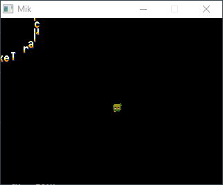

Getting Started¶
Mikro (pronounced mee-cro), is a really simple game platform/engine intended for small games (you could make big ones too).
It uses Lua scripting for the games and it’s implemented in C++ for that full speed. It supports some basic shapes, sprites, animations, simple sounds and music, and everything is limited to a 320x240 screen, upscaled to a 640x480 window.
You can get Mikro here.
For you to run any game, just drag your Lua script to the executable and done. Here’s a simple “Hello World program”:
local x = 0.0 function _init() print("Hello World Started!") end function _draw() mik.clear(128, 80, 20) mik.line(0, 0, 100, 100, 255, 255, 0) mik.circf(x, 100, 12, 0, 255, 255) end function _update(dt) x = x + dt end function _exit() print("Hello World Finished!") end
Now check out the Mikro’s Lua API page to learn more about all the functionality.
Gallery¶
